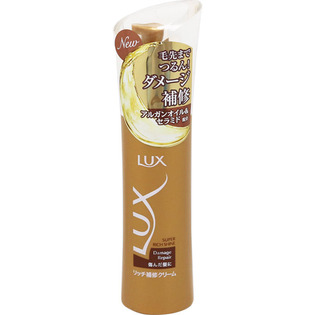

返回列表
产品名称：ラックス スーパーリッチシャイン ダメージリペア リッチ補修クリーム

ユニリーバ・ジャパン ラックス スーパーリッチシャイン ダメージリペア リッチ補修クリーム １００ｍｌ
メーカー ユニリーバ・ジャパン
JANコード 4902111733388
商品の特徴
毛先までなめらかな髪を一日中キープ
傷んだ髪に
- 成分・分量
- 水、ミリスチン酸イソプロピル、スクワラン、ジメチコン、ベヘントリモニウムクロリド、ジグリセリン、イソステアリン酸、BG、ステアリルアルコール、セタノール、アルガニアスピノサ核油、イソ酪酸酢酸スクロース、加水分解ヒアルロン酸、ヒアルロン酸ヒドロキシプロピルトリモニウム、酢酸トコフェロール、ミネラルオイル、アルギニンHCl、リシンHCl、トリ(カプリル酸/カプリン酸)グリセリル、DPG、ヒドロキシプロピルシクロデキストリン、ヒドロキシエチルセルロース、PEG-40水添ヒマシ油、ラウレス-2、ラウレス-4、ラウレス-21、ラウレス-23、クエン酸、EDTA-2Na、フェノキシエタノール、ブチルカルバミン酸ヨウ化プロピニル、サリチル酸Na、香料
- 用法及び用量
- 適量を手にとり、手のひらでよく伸ばしてから、髪全体に良くなじませてください。（適量：ミディアムヘアで2－3プッシュ）